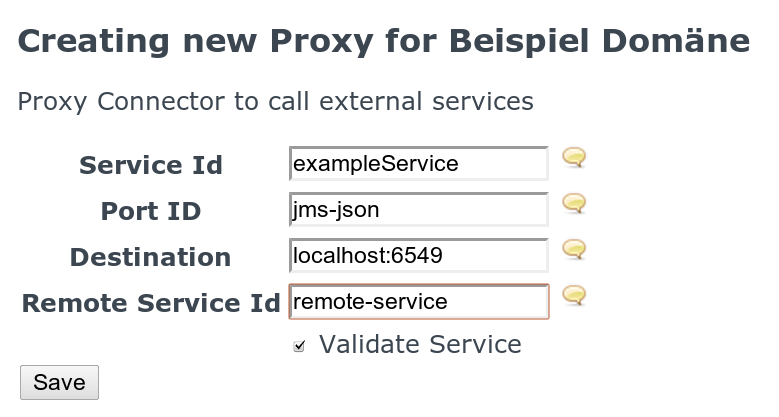

10.1. Using JMS proxying
The current JMS Connector allows for internal method calls being redirected via JMS as well as internal services being called.
For resources regarding JMS please take a look at the according Wikipedia Page and for specific language bindings take a look at ActiveMQ
10.1.1. Proxying internal Connector calls
Whenever now a method is sent through the JMS Port the call is marshalled and sent via JMS to a queue named "receive"". The marshalling is done via JSON. The mapping has the parameters methodName, args, classes, metadata and potentially answer and callId. methodName gives the name of the method to call. Args are the serialised parameters of the method. classes are the types of the arguments. This way it is easy to unmarshall the args into the appropriate classes. metadata is a simple Map which stores key value pairs. answer can simply be yes or no and denotes if the methodcall wants an answer to the call. callId gives the return queue the caller will listen to for an answer.
An answer can have the type, arg, className and metaData properties. type can be Object, Exception or Void. arg is the serialised form of the return argument. className is the runtime class of the arg for deserialisation. metadata is a simple key value store.
10.1.1.1. HowTo call an external service via proxies
This section will give a short introduction how to instantiate a proxy and call an external connector
First you have to go to the TestClient to instantiate a new Proxy. Select the Domain you want to have proxied and click New Proxy for that Domain.
 Testclient new proxy link
Testclient new proxy link
Then you have to set the correct values for the proxy properties. The Service Id is a unique value that identifies the proxy in the OPENENGSB system. The Port Id defines to Port to be used for sending the request. "jms-json" is a currently supported Port that sends the request via a json encoded JMS message. The destination describes the endpoint the message should be sent to. When using jms-json the domain and port of the JMS provider have to be set. When calling a remote connector the unique id of the remote service or connector has to be provided. This way the remote service can identify, load and call a certain service. If the call is not intended to go to another OPENENGSB, or the external service needs no identification of the service to call the remote service id can be ommited.
 Create ProxyAfter saving the proxy you should be able to test it via the TestClient page. Following is an example of an unsecure call:
{
"authenticationData": {
"className":"org.openengsb.core.api.security.model.UsernamePasswordAuthenticationInfo",
"data": {
"username":"admin",
"password":"password"
}
},
"timestamp":42,
"message": {
"callId":"xyz",
"answer":true,
"methodCall": {
"classes": [
"java.lang.String",
"org.openengsb.core.api.workflow.model.ProcessBag"
],
"methodName": "executeWorkflow",
"metaData": {
"serviceFilter": "(objectClass=org.openengsb.core.api.workflow.WorkflowService)",
"contextId": "foo"
},
"args": [
"simpleFlow",
{
}
]
}
}
}
IF you would like to use security instead you should prefer the following call:
{
{
"encryptedContent":"encodedMessage", // Base 64 and encryped string of the message above
"encryptedKey":"encodedKey" // The encoded key
}
 Test a proxy
Test a proxy
When proxying connector calls you have to provide an answer to every call, as the system blocks until it gets an answer. You have to send a JSON message containing a type string parameter, which can be Object, Exception or Void depending on the return argument of the method, arg where you simply serialise the Return Object, so it can be deserialised into the correct object later and className which gives the exact class that has to be used for deserialisation. The request contains a parameter callId which is the name of the queue the answer has to be sent to.
{"type":"Object","className":"org.openengsb.core.ports.jms.JMSPortTest$TestClass",
"metaData":{"test":"test"},"arg":{"test":"test"}}
Whenever a call to this proxy is then made a new JMS message will be sent to the "receive" queue on the destination you entered. The exact make up of the message was already described. When implementing an external connector it is best to test the call you want to receive first via the TestClient, so you get the exact message that you will have to work with.
Please always keep in mind security. By default security is turned on. If you want to turn it off please take a look into the etc/system.properties file. While using no security for testing is very interesting we would not advise you to send unencrypted messages in a production environment.
10.1.2. Calling internal Services
To call an internal Service send a methodcall as described before to the "receive" queue on the server you want to call. The service works exactly as defined before. There currently are two ways of specifying which service to address.
- serviceId: This will call the service that was exported with the specified "id"-property. It behaves like the following Filter in OSGi-syntax: (id=<serviceId>)
- serviceFilter: This way you can specify any filter in OSGi-syntax to adress the service, so it is not necessary to bind the client to a specific id, but to other properties as well (e.g. location.root, location.<context>, objectClass, ...)
You can also use both attributes (serviceId and serviceFilter). It will create a filter matching both constraints.
Example: if you want to execute a workflow via the WorkflowService send
{"callId":"12345","answer":true,"classes":["java.lang.String", "org.openengsb.core.api.workflow.model.ProcessBag"], "methodName":"executeWorkflow","metaData":{"serviceId":"workflowService", "contextId":"foo"},"args":["simpleFlow", {}]}Please be aware that the flow the above method tries to call (simpleFlow) is not available by default on the OpenEngSB. To make sure that there's a flow you can call install the flow in the OpenEngSB. Therefore start the OpenEngSB and go to the SendEventPage. There choose to create a new process and press new. Now enter simpleFlow as processname and past the following process:
<process xs:schemaLocation="http://drools.org/drools-5.0/process
drools-processes-5.0.xsd" type="RuleFlow" name="simpleFlow" id="simpleFlow"
package-name="org.openengsb" xmlns="http://drools.org/drools-5.0/process"
xmlns:xs="http://www.w3.org/2001/XMLSchema-instance">
<header>
<variables>
<variable name="processBag">
<type name="org.drools.process.core.datatype.impl.type.ObjectDataType"
className="org.openengsb.core.api.workflow.model.ProcessBag"/>
</variable>
</variables>
</header>
<nodes>
<start id="1" name="Start" x="16" y="16" width="91" height="48"/>
<end id="2" name="End" x="21" y="168" width="80" height="40"/>
<actionNode id="3" name="Action" x="21" y="96" width="80" height="40">
<action type="expression" dialect="mvel">
processBag.addProperty("test", 42);
processBag.addProperty("alternativeName", "The answer to life the universe and everything");
</action>
</actionNode>
</nodes>
<connections>
<connection from="3" to="2"/>
<connection from="1" to="3"/>
</connections>
</process>
After pressing save you can access the process via the message shown above.
to the receive queue on the OPENENGSB JMS Port which is started by default on Port 6549. Make sure that classes and args has the same number of arguments. If you just want an object to be instantiated, but have no corresponding values that should be set for the object simply add {} (as in the example above) which will instantiate the object but recognize, that no values have to be set on the object. {"name" : "SomeName"} would on the other hand call the setName method with SomeName.
The response to the above message will be returned on a queue you've pasted via the callId field.
10.1.3. Examples
We provide examples in different languages how to connect to the OpenEngSB. The examples are grouped according to language and the documentation to the different examples are directly done in the code of the examples. We try to keep those examples as good as possible up-to-date, but do not gurantee that they all work as expected since we can't add them to our integration tests. If you want to provide examples in different languages you're always welcomed to provide them.
10.1.3.1. Connect With Python
To test the OPENENGSB JMS implementation with Python please follow the instructions
The example can be downloaded here
10.1.3.2. Connect With CSharp
The CSharp connector is written on basis of the Apache ActiveMQ JMS connector. There an EngSB.sln file. This project file has been developed with SharpDevelop 4, but is also tested with VisualStudio 2008 CSharp Express Edition with the .Net Framework 4.
The example can be downloaded here
10.1.3.3. Connect With Perl
As shown in this example you can connect to the OpenEngSB in a similar way as with Python or CSharp.
The example can be downloaded here
10.3. Internal Specialities
Basically there is nothing special to do to get up a service. Still, since java has no static type information there is no possibility to marshal things like a java.util.List of options. The fix we've introduced for this problem is to annotate parameters and define a custom marshaller. Therefore create a class with a default constructor extending CustomJsonMarshaller. Then annotate the parameter of the implementations you're using with the UseCustomJasonMarshaller annotation adding the Marshaller class. That's it. The framework will automatically create the mapper and call the transform method for you.
Since there is an issue right now with Aries Proxies hiding parameter annotations the CustomMarshallerRealTypeAccess interface provides a workaround for the problem. In case this interface is found the class provided by it is used for searching. Otherwise the class directly is scanned.
| Prev | Home | Next |
| Chapter 9. HowTo - Create a Client-Project for the OpenEngSB | OpenEngSB Community | Chapter 11. HowTo - Combine mulitple connectors |